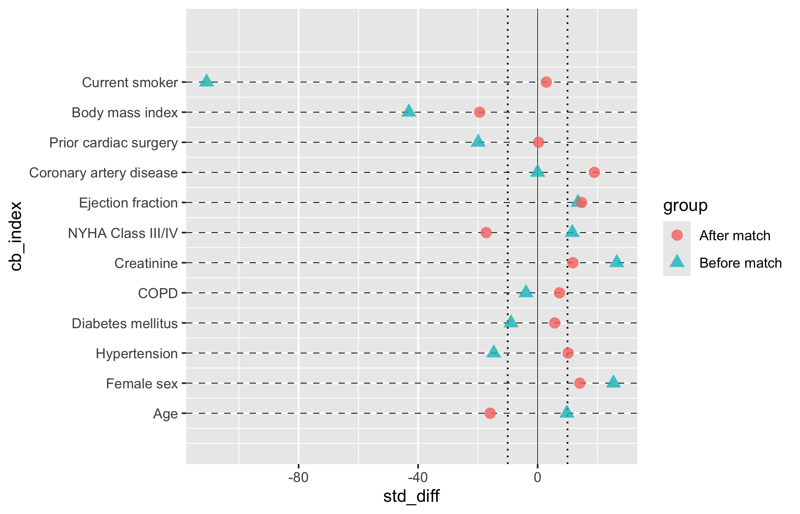
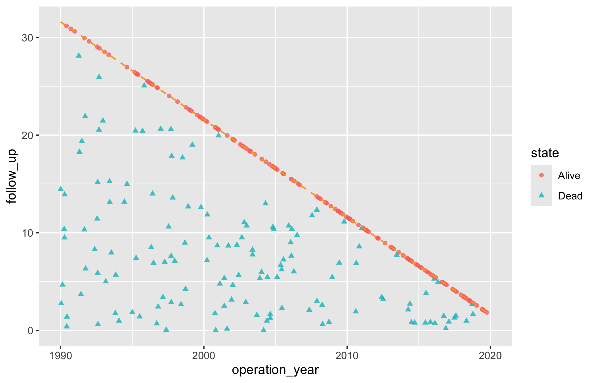

This chapter covers the two figures we reach for to vouch for a study before we report a single outcome from it. The covariate balance plot says the groups we are comparing were actually comparable. The goodness-of-follow-up plot says we kept track of the patients long enough to believe the outcome. Neither is the headline figure of a paper, but a reviewer who does not see them will ask, and both belong in the same quality-control habit.
They answer separate decisions. Use the balance plot to decide whether measured baseline covariates are acceptably similar across comparison groups. Use the follow-up plot to decide whether outcome ascertainment covers the study window. Good balance cannot make up for poor follow-up, and good follow-up cannot repair confounding at baseline.
18.1 Covariate balance plots
18.1.1 When to use it
Whenever you compare two groups that were not randomized (a propensity-matched SAVR-versus-TAVR cohort, say, or an inverse-probability-weighted analysis) the first question is whether the comparison is fair. If the treated patients were sicker to begin with, any difference in outcome could just be that. The covariate balance plot is how we show, covariate by covariate, that matching or weighting pulled the two groups together.
Each covariate is a row. A point shows the standardized mean difference (SMD, the gap between groups in standard-deviation units, scaled to a percent) for each comparison stage, usually before and after matching. A solid line at zero marks perfect balance; dotted guides at plus and minus ten percent give the eye a threshold for “close enough.” hv_balance()(Ehrlinger 2026) prepares the data and plot() hands back a bare ggplot to style with +.
18.1.2 The data it needs
hv_balance() wants long format: one row per covariate-by-group combination, with a column for the covariate name, one for the group label ("Before match", "After match"), and one for the numeric SMD. sample_covariate_balance_data() returns 12 covariates already in that shape, with columns variable, group, and std_diff.
variable group std_diff
1 Age Before match 9.8
2 Female sex Before match 25.4
3 Hypertension Before match -14.7
4 Diabetes mellitus Before match -8.9
5 COPD Before match -3.9
6 Creatinine Before match 26.5
# Build the S3 object once; reuse for all plot variants belowcb <-hv_balance(dta_cb, threshold =10)
If your numbers arrive in wide format (one column per stage, as a summary table or spreadsheet export usually does), reshape to long first. reshape() from base R does it in one call: name the two stage columns in varying, give the stacked value column a name with v.names, and tell it which column identifies the covariate.
variable group std_diff
Age.Before match Age Before match 22.1
Female sex.Before match Female sex Before match -15.3
Hypertension.Before match Hypertension Before match 18.7
Diabetes.Before match Diabetes Before match -9.4
COPD.Before match COPD Before match 11.2
Age.After match Age After match 3.5
18.1.3 Inspect it
Inspect the prepared balance object before plotting. Its metadata records the row order and the 10-percent threshold. The cross-tabulation then audits how many covariates fall inside that threshold for each stage. In this synthetic example, only 4 of 12 covariates are inside the guides both before and after matching, so the figure is a diagnosis of inadequate balance, not evidence that matching succeeded.
cb
<hv_balance>
Variables : 12
Groups : 2 (Before match, After match)
SMD col : std_diff
Threshold : ±10
within_threshold
group FALSE TRUE
After match 8 4
Before match 8 4
18.1.4 Build it
Start from the bare panel to see what the constructor produced. One covariate per row, points at their SMD values, and no colour, shape, axis limits, or theme yet.
plot(cb, alpha =0.8)

Now layer on the house style. We map "Before match" to red triangles and "After match" to blue squares, the colour convention this team has used for years, and widen the x-axis enough to hold the largest pre-match SMD. Symmetric breaks around zero make the plus-or-minus-ten-percent threshold easy to eyeball.
For a finished figure, put the legend above the panel and state the direction of imbalance in the caption. Keeping both outside the data region avoids covering the most imbalanced covariates and keeps the interpretation attached when the figure is exported.
Figure 18.1: Covariate balance plot showing standardized mean differences before and after matching; negative values favour TF-TAVR and positive values favour SAVR
18.1.5 Read it
Read down the rows, comparing the two points in each:
The after-match points should collapse toward zero. That is the target, but it is not what this synthetic example shows overall. Only 4 of 12 blue squares sit inside the dotted plus-or-minus-ten guides, the same count as before matching. Do not describe this cohort as balanced.
Watch any covariate that stays imbalanced. A blue point still well past ten percent is a variable matching did not fix. You either adjust for it in the outcome model or say so in the limitations.
The annotations name the direction. A positive SMD means one group has more of that covariate; the panel labels tell the reader which. Without them a reviewer cannot tell whether “More likely SAVR” sits left or right.
18.1.6 Variations
18.1.6.1 Controlling covariate order
Pass var_levels to the constructor to set the bottom-to-top order of rows. Supply any vector containing all the covariate names; the example reverses the default. Order covariates the way a reader scans them, often most-imbalanced at top, rather than by data-frame order.
Figure 18.2: Covariate balance plot with the row order reversed to control how a reader scans the covariates
18.2 Goodness-of-follow-up plots
18.2.1 When to use it
A survival or time-to-event analysis is only as trustworthy as its follow-up. If patients vanished from the records early, an apparent absence of events may just be an absence of looking. The goodness-of-follow-up plot is how we show a reviewer that the cohort was tracked across the whole study window, not just at the start.
Each patient is a point at their operation date (x-axis) and follow-up duration (y-axis), with a short tick below. A dashed diagonal marks the maximum follow-up the study window alone could explain: a patient operated on early could be followed for many years, one operated on late for only a few. Points above the diagonal have more follow-up than the window explains, which happens when passive surveillance (registry linkage, say) extends beyond the active cross-sectional contact. hv_followup()(Ehrlinger 2026) prepares the data; the type argument picks the panel: "followup" (the default death-or-censoring scatter) or "event" (a competing non-fatal event).
18.2.2 The data it needs
hv_followup() wants one row per patient with an operation date, a follow-up duration, and a vital-status indicator. The constructor also needs three study dates, study_start, study_end, and close_date, to place the maximum-follow-up diagonal correctly. sample_goodness_followup_data() generates 300 patients in that shape, including a simulated non-fatal event column we use later.
The returned object carries the prepared plotting rows and the dates that set the diagonal. Inspect both before drawing the panel. The state table is also a legend audit: its Alive and Dead levels must match the two manual colour and shape entries used below.
gf
<hv_followup>
N patients : 300
Study period: 1990-01-01 – 2019-12-31 (close: 2021-08-06)
Death col : dead / iv_dead
Panels : followup
operation_year follow_up segment_end state
1 2019.569 2.0261 2.0261 Alive
2 1996.483 6.9027 6.9027 Dead
3 2004.434 5.4468 5.4468 Dead
4 2015.432 6.1630 6.1630 Alive
5 1993.425 13.1369 13.1369 Dead
6 2014.162 7.4334 7.4334 Alive
18.2.4 Build it
Start with the bare panel: each patient is a point and tick, with no scales or labels yet.
# Bare plot, no scales or labels yetplot(gf)

Now finish it. scale_color_manual() and scale_shape_manual() map the binary alive-or-dead state to colour and point shape; coord_cartesian() clips the view to the study window; annotate() labels the two states on the panel; and theme_hv_manuscript() gives the journal-sized version.
Figure 18.3: Goodness-of-follow-up plot showing each patient’s operation date against follow-up duration, coloured by vital status, with the maximum-follow-up diagonal
18.2.5 Read it
The shape of the cloud tells the story:
A solid wedge under the diagonal is good news. Points filling the triangle below the line mean patients across the whole span of operation dates were followed about as long as the window allows. Gaps or thin regions flag eras where follow-up was sparse.
Points above the diagonal are not errors. They mark patients whose status is known beyond the active follow-up window, usually through passive linkage. A scatter of them above the line is expected; if every point sits exactly on the line, the close date is probably set wrong.
The colour split shows the events. Red points are deaths. Where they cluster (early after surgery, or late at long follow-up) is a hint at the hazard pattern you will quantify in the survival analysis.
18.2.6 Variations
18.2.6.1 Non-fatal event panel
When the dataset carries a non-fatal competing event (relapse, reoperation), pass event_col, event_time_col, and optionally death_for_event_col to the constructor, then call plot() with type = "event". The panel then shows the three-way event status (no event, the non-fatal event, death) instead of the binary alive-or-dead split.
<hv_followup>
N patients : 300
Study period: 1990-01-01 – 2019-12-31 (close: 2021-08-06)
Death col : dead / iv_dead
Event col : ev_event / iv_event
Panels : followup, event
operation_year follow_up segment_end state
1 2019.569 2.0261 2.0261 No event
2 1996.483 4.0813 4.0813 Relapse
3 2004.434 5.4468 5.4468 Death
4 2015.432 0.6137 0.6137 Relapse
5 1993.425 6.9232 6.9232 Relapse
6 2014.162 7.4334 7.4334 No event
The event table makes the classification explicit before the legend appears. A recorded relapse is labelled Relapse only when it occurs before death. If death occurs first, the row is labelled Death; a patient with neither is labelled No event. Check these three counts against the event analysis set before interpreting the panel.
Figure 18.4: Goodness-of-follow-up plot showing three-way event status (no event, non-fatal event, death) for each patient
18.3 Pitfalls
Balance plots need long format. One row per covariate-by-group combination. Hand hv_balance() a wide table and you get one point per covariate instead of the before-and-after pair; reshape first.
Distinguish the groups. If the before and after points sit on top of each other for every covariate, check that the group column actually has two distinct levels. Identical points usually mean a labelling slip, not perfect matching.
A single threshold is a guide, not a verdict. The ten-percent lines are a convention. A covariate just past them may matter clinically or may not; judge it against what the variable is, not the line alone.
The follow-up diagonal depends on the dates.study_start, study_end, and close_date set where the line falls. Get one wrong and every point looks mis-placed relative to it. Confirm the three dates against the protocol before reading the figure.
Above the line is not a data error. Points above the diagonal reflect passive surveillance reaching past active contact. Do not “clean” them away; they are part of why the follow-up is good.
Ehrlinger, John. 2026. hvtiPlotR: HVTI Ggplot2 Themes and Clinical Plot Functions for the Cleveland Clinic Heart & Vascular Institute. https://github.com/ehrlinger/hvtiPlotR.